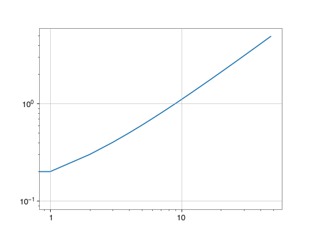

Log scales in GWpy¶
GWpy overrides the default axis tick formatters
for logarithmic scales to one with the following logic:
0.1 <= x <= 1000andxhas less than 2 decimal places, just represent with'%s'otherwise use the default formatting
'%s^{%.2f}' % (base, logx)
This results in plots that have slightly nicer default ticks:
>>> import gwpy # <-- import anything from gwpy to active custom formatter
>>> import numpy
>>> from matplotlib import pyplot
>>> fig = pyplot.figure()
>>> ax = fig.gca()
>>> ax.plot(numpy.arange(.1, 5, step=.1))
>>> ax.set_xscale('log')
>>> ax.set_yscale('log')
>>> fig.show()
(png)
{kind=link}

Here you can see the X-axis formats with the updated ticks, showing ‘1’ and ‘10’ instead of ‘10 0’ and ‘10 1’, while the Y-axis – because it has ticks below 0.01 – uses the standard scientific notation.
The new log formatter can be disabled by manually setting the major and
minor formatters for log-scaled axes to
LogFormatterMathtext:
>>> from matplotlib.ticker import LogFormatterMathtext
>>> ax.yaxis.set_major_formatter(LogFormatterMathtext())